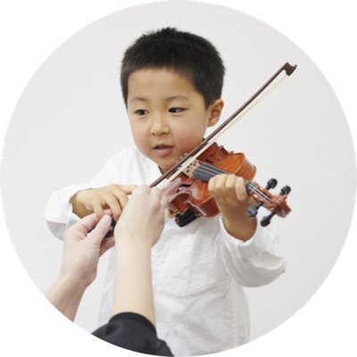
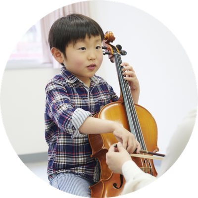
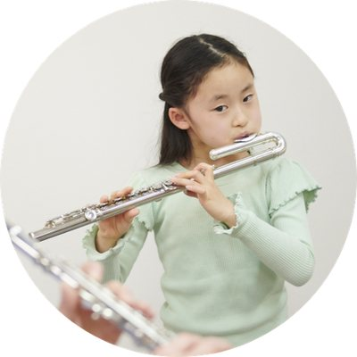
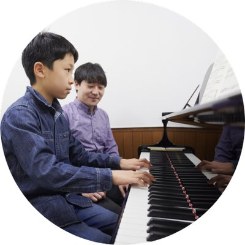
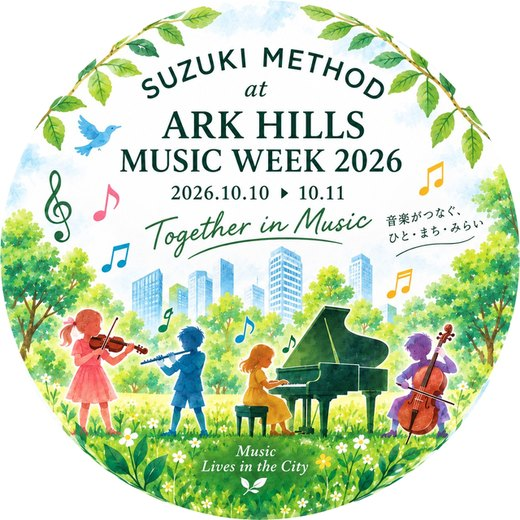
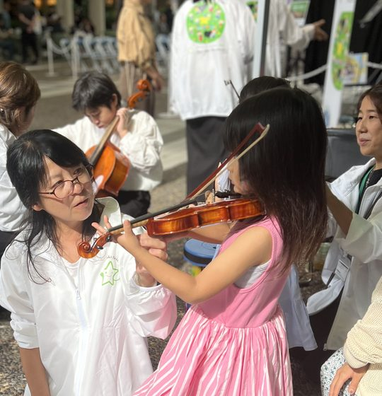

ARK Hills Music Week 2026｜音の遊び場
10月10日（土）・11日（日）アークヒルズ アーク・カラヤン広場
- 入場無料・事前予約不要・参加費不要
- 出入り自由
- 3歳から体験いただけます
カラヤン広場で
はじめての楽器に
出会う2日間
スズキ・メソードの

思い立ったらお立ち寄りいただけます
予約・申込不要
当日広場に来ていただくだけです。参加費もかかりません。
途中入場も
途中退出も自由 演奏の途中でも体験の途中でもご自由に出入りいただけます。お子さまの機嫌に合わせて15分だけでも大丈夫です。
走っても大丈夫な
芝生の広場 静かに座って聴く場所ではありません。屋根のある広場に芝生が敷かれますので、赤ちゃん連れでも動き回る年齢でもお楽しみいただけます。
広場の芝生の上で、すぐそばで音楽が生まれる30分
ステージと客席を区切らず、奏者が広場の中に散らばってみなさんと同じ場所から演奏します。

| 日時 | プログラム名 | 内容 |
|---|---|---|
| 10月10日（土） 11:15－11:45 | スズキチルドレン アンサンブル | ヴァイオリン・チェロ・フルート・ピアノを学ぶ子どもたちによるアンサンブル演奏 |
| 10月11日（日） 11:00－11:30 | スズキ・メソードコンサート | 弦楽器とフルートによるアンサンブル・コンサート |
- 出演
- 幼児から大人までスズキ・メソードで学ぶ生徒・卒業生・指導者約100名
- 曲目
- スズキ・メソードで最初に学ぶ曲を中心に6曲から7曲を予定しています。フィナーレは子どもたちが一番はじめに学ぶキラキラ星変奏曲。小さな子どもから大人までが同じ曲を一緒に弾きます。
- 保護者の方へ
- こんなに小さな子どもたちが弾いている。子どもと大人が一緒に演奏している。音楽はこんなに身近なんだと感じていただける演奏です。
演奏のあとはそのまま楽器体験へ
聴くだけではありません。芝生の上のテーブルとブースで楽器に触れて、メニューから1曲えらんで、写真を持ち帰れます。
楽器に触ったことがないお子さまでも楽器を体験できます

ヴァイオリン
チェロ
フルート
ピアノ
ヴァイオリン・チェロ・フルート・ピアノ。興味のある楽器を実際に構えて鳴らしてみてください。複数の楽器を試すこともできます。指導者が横につきますので楽器を触ったことがなくても大丈夫です。
※ヴァイオリン・チェロ・フルートは芝生の上のテーブルで、ピアノはブース内で体験できます。ピアノは電子ピアノでの体験となります。
メニューから1曲えらんで注文すると目の前で演奏します
音楽を鑑賞するものから、子どもが自分で選び注文し受け取るものへ。ブースの一角を小さなレストランに見立ててメニューボードと食券受付を設置します。演奏者はシェフとして白いエプロンで来場者を迎えます。メニューの8曲から子どもが自分で選び、音楽家とやり取りし、生の音を受け取る体験です。
流れ
缶バッジをつくる
できあがったら食券をもらう
メニューの8曲から
聴きたい曲を 1曲えらぶ シェフ役の先生に
食券を渡して 注文する 目の前で2人の先生が生演奏
メニュー（8曲）
いずれもスズキ・メソードの子どもたちが実際に最初に学んでいる曲です。
演奏編成
ヴァイオリン＋ヴァイオリン／ヴァイオリン＋ピアノ／ヴァイオリン＋フルート／ヴァイオリン＋チェロ。同じ曲でも組み合わせで響きが変わりますので2回目のご注文も可能です。
シェフのひとこと
演奏者がスズキのロゴの缶バッジをつけた白いエプロンを着用し、シェフとしてお迎えします
- いらっしゃいませ。
食券お預かりいたします - アレグロのオーダー入りました
- 毎度ありがとうございました
来場者特典

缶バッジ
ブースで自分でつくった缶バッジをそのまま持ち帰れます。完成すると音楽レストランの食券がもらえます。
材料がなくなり次第終了（※要確認：数量）
記念フォトカード
楽器体験のあと簡単なアンケートにご協力いただいた方に、お子さまが好きな楽器と一緒にチェキで記念撮影。その場でオリジナル台紙に貼ってお渡し。
はじめて楽器にふれた日を一枚の写真に。撮影した写真はその場で二つ折りの台紙に貼ってお渡しします。表紙にはイベント名、内側に写真と「きょう、わたしが出会った楽器」のメッセージ、裏面にスズキ・メソードの紹介を掲載しています。帰ってからもご家庭で開けるカードです。
各日150名分。なくなり次第終了会場・アクセス
- 会場
- アーク・カラヤン広場（サントリーホール前）
- 開催時間
- 10月10日（土）・11日（日）11:00－17:00
- アクセス
- 東京メトロ南北線
「六本木一丁目駅」 3番出口より 徒歩1分 - 東京メトロ銀座線
「溜池山王駅」 13番出口より 徒歩1分
- 東京メトロ南北線
- ベビーカー
- ※要確認
- 雨天時
- 雨天の場合は一部プログラムが中止となる可能性があります。当日の実施状況は※要確認（確認先）でご確認ください。
会場では、ほかにもさまざまな音楽体験をお楽しみいただけます
アークヒルズの公式イベントページへよくある質問
予約は必要ですか
不要です。当日直接広場へお越しください。
参加費はかかりますか
かかりません。同じ広場で開催される他社のワークショップには有料のものがあります。
何歳から参加できますか
楽器体験は3歳からを目安にしています。演奏を聴くだけであれば年齢制限はありません。
楽器を触ったことがなくても大丈夫ですか
大丈夫です。指導者が横についてご案内します。はじめての方のための体験です。
途中で帰っても大丈夫ですか
はい。演奏中でも体験の途中でもご自由にどうぞ。
子どもが泣いたり走り回ったりしそうです
芝生の広場ですので問題ありません。静かに座って聴くことを求める場ではありません。
教室の勧誘はありますか
※要確認（先方確認のうえ記載。書けない場合は項目ごと削除）
雨の場合はどうなりますか
一部プログラムが中止となる可能性があります。当日の状況は※要確認（確認先）をご覧ください。
どの子も育つ 育て方ひとつ
スズキ・メソードは世界74の国と地域に広がる音楽教育です。母語を覚えるように聴くことから音楽を学びます。今回演奏する子どもたちも最初はキラキラ星から始めました。
10月10日（土）・11日（日）
聴いてさわって